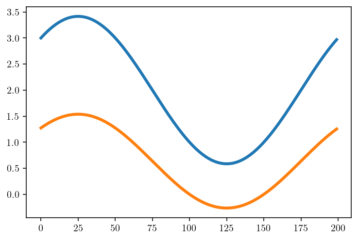
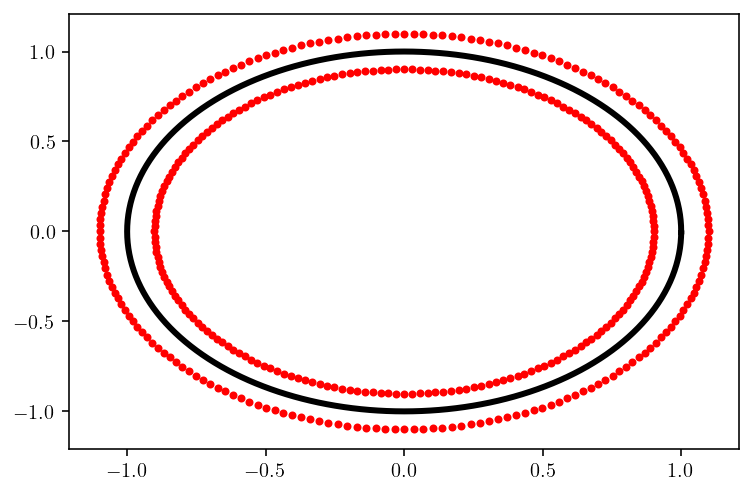
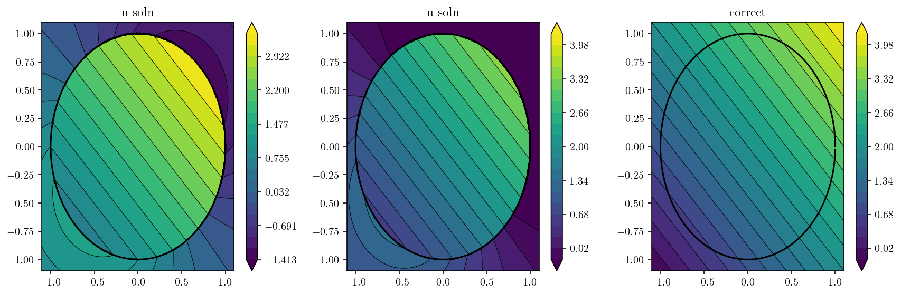
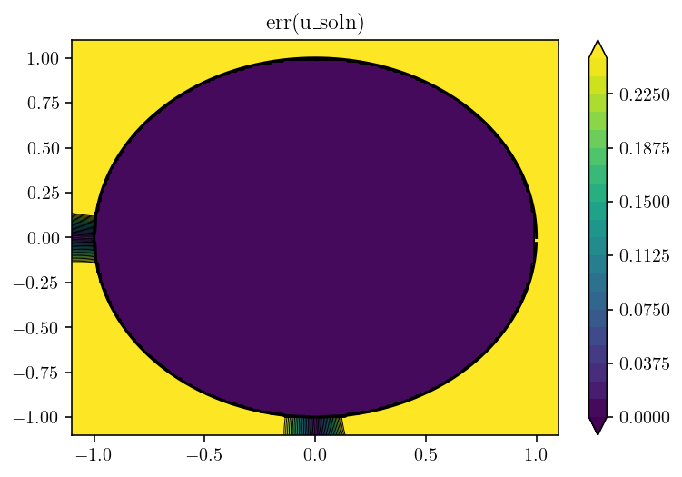

4. [DRAFT] Dirichlet problem on a circle.¶
4.1. TODO:¶
Based on mms_circle
Deal with the homogeneous solution.
Add back in the body force.
The remaining fundamental issue is the singularity in the volume integral. Set up a way of testing the accuracy of this integral.
4.2. Setup¶
4.3. Direct to surface eval¶
For the Poisson equation with Dirichlet boundary conditions:
\begin{split}
\nabla u &= f ~~ \textrm{in} ~~ \Omega\
u &= g ~~ \textrm{on} ~~ \partial \Omega
\end{split}
u_body_force is the integral:
(4.10)¶\[\begin{equation}
v(x) = \int_{\Omega} G(x,y) f(y) dy
\end{equation}\]
which satisfies equation 1 but not 2.
Then, compute homogeneous solution with appropriate boundary conditions:
\begin{split} \nabla u^H &= 0 ~~ \textrm{in} ~~ \Omega \ u^H &= g - v|_{\partial \Omega} ~~ \textrm{on} ~~ \partial \Omega \end{split}
So, first, I need to compute \(g - v|_{\partial \Omega}\)
import numpy as np
import matplotlib.pyplot as plt
import common
import sympy as sp
%config InlineBackend.figure_format='retina'
n_q = 200
circle_rule = list(common.trapezoidal_rule(n_q))
t = sp.symbols("t")
theta = sp.pi * (t + 1)
circle_rule[1] *= np.pi
sym_circle = common.symbolic_surface(t, sp.cos(theta), sp.sin(theta))
circle = common.symbolic_eval(t, circle_rule[0], sym_circle)
np.sum(np.cos((circle_rule[0] + 1) * np.pi) ** 4 * circle_rule[1])
2.356194490192345
## This is g
def soln_fnc(x, y):
return 2 + x + y
bcs = soln_fnc(circle[0], circle[1])
kappa = 3
qbx_p = 8
mult = 1.0
if kappa != 1:
refined_circle_rule = list(common.trapezoidal_rule(kappa * circle_rule[0].shape[0]))
refined_circle_rule[1] *= np.pi
refined_circle = common.symbolic_eval(t, refined_circle_rule[0], sym_circle)
else:
refined_circle_rule = circle_rule
refined_circle = circle
qbx_center_x, qbx_center_y, qbx_r = common.qbx_choose_centers(
circle, circle_rule, mult=mult, direction=-1.0
)
plt.plot(circle[0], circle[1])
plt.quiver(circle[0], circle[1], circle[2], circle[3])
plt.plot(qbx_center_x, qbx_center_y, "ro")
[<matplotlib.lines.Line2D at 0x7ff7808aaf70>]
qbx_expand = common.qbx_expand_matrix(
common.double_layer_matrix,
refined_circle,
refined_circle_rule,
qbx_center_x,
qbx_center_y,
qbx_r,
qbx_p=qbx_p,
)
qbx_eval = common.qbx_eval_matrix(
circle[0][None, :],
circle[1][None, :],
qbx_center_x,
qbx_center_y,
qbx_p=qbx_p,
)[0]
A_raw = np.real(np.sum(qbx_eval[:, None, :, None] * qbx_expand, axis=2))
A_raw = A_raw[:, 0, :]
interp_matrix = np.zeros((A_raw.shape[1], A_raw.shape[0]))
for i in range(refined_circle_rule[0].shape[0]):
offset = i % kappa
if offset == 0:
match = i // kappa
interp_matrix[i, match] = 1.0
else:
below = i // kappa
above = below + 1
if above == interp_matrix.shape[1]:
above = 0
interp_matrix[i, below] = (kappa - offset) / kappa
interp_matrix[i, above] = offset / kappa
plt.plot(circle_rule[0], bcs)
plt.plot(refined_circle_rule[0], interp_matrix.dot(bcs))
[<matplotlib.lines.Line2D at 0x7ff7f4a22310>]
A = A_raw.dot(interp_matrix)
surf_density = np.linalg.solve(A, bcs)
plt.plot(bcs)
plt.plot(surf_density)
plt.show()

nobs = 200
offset = -0.1
zoomx = [-1.0 + offset, 1.0 - offset]
zoomy = [-1.0 + offset, 1.0 - offset]
xs = np.linspace(*zoomx, nobs)
ys = np.linspace(*zoomy, nobs)
obsx, obsy = np.meshgrid(xs, ys)
obs2d = np.array([obsx.flatten(), obsy.flatten()]).T.copy()
obs2d_mask = np.sqrt(obs2d[:, 0] ** 2 + obs2d[:, 1] ** 2) <= 1
obs2d_mask_sq = obs2d_mask.reshape(obsx.shape)
obs2d_mask_away = np.sqrt(obs2d[:, 0] ** 2 + obs2d[:, 1] ** 2) <= 0.9
obs2d_mask_away_sq = obs2d_mask_away.reshape(obsx.shape)
correct = soln_fnc(obsx, obsy)
u_rough = (
common.double_layer_matrix(circle, circle_rule, obsx.flatten(), obsy.flatten())
.dot(surf_density)
.reshape(obsx.shape)
)
refined_density = interp_matrix.dot(surf_density)
u_smooth = common.interior_eval(
common.double_layer_matrix,
circle,
circle_rule,
surf_density,
obsx.flatten(),
obsy.flatten(),
kappa=kappa,
offset_mult=mult,
qbx_p=qbx_p,
quad_rule_qbx=refined_circle_rule,
surface_qbx=refined_circle,
slip_qbx=refined_density,
visualize_centers=True,
).reshape(obsx.shape)

u_soln = u_smooth
plt.figure(figsize=(12, 4))
for i, to_plot in enumerate([u_soln, u_soln, correct]):
plt.subplot(1, 3, 1 + i)
if i == 0:
levels = np.linspace(np.min(to_plot), np.max(to_plot), 21)
else:
cmin = np.min(correct)
cmax = np.max(correct)
if cmin == cmax:
cmin = 0.9 * cmin
cmax = 1.1 * cmax
levels = np.linspace(cmin, cmax, 21)
cntf = plt.contourf(obsx, obsy, to_plot, levels=levels, extend="both")
plt.contour(
obsx,
obsy,
to_plot,
colors="k",
linestyles="-",
linewidths=0.5,
levels=levels,
extend="both",
)
plt.plot(circle[0], circle[1], "k-", linewidth=1.5)
plt.colorbar(cntf)
plt.xlim(zoomx)
plt.ylim(zoomy)
plt.title(["u\_soln", "u\_soln", "correct"][i])
plt.tight_layout()
plt.figure()
to_plot = np.abs(correct - u_soln)
levels = np.linspace(0, 0.25, 21)
cntf = plt.contourf(obsx, obsy, to_plot, levels=levels, extend="both")
plt.contour(
obsx,
obsy,
to_plot,
colors="k",
linestyles="-",
linewidths=0.5,
levels=levels,
extend="both",
)
plt.plot(circle[0], circle[1], "k-", linewidth=1.5)
plt.colorbar(cntf)
plt.xlim(zoomx)
plt.ylim(zoomy)
plt.title("err(u\_soln)")
plt.show()

